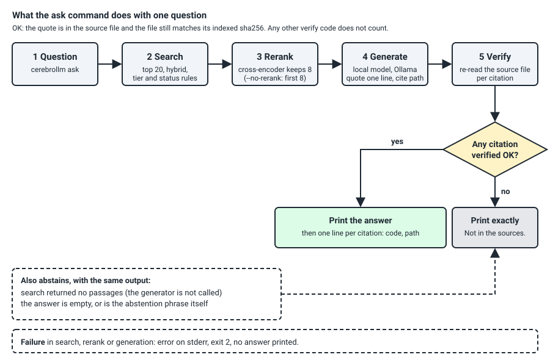

cerebrollm
Ask a question of your own Markdown documents. You get an answer with a quote that the tool has re-read in the source file, or the words Not in the sources.
What it does
cerebrollm runs on your machine. It indexes a folder of Markdown files in a local PostgreSQL database. For a question it finds the best passages (keyword and vector search, then a reranker), asks a local model to quote the one line it relies on, and checks that quote against the source file and the sha256 recorded at indexing time. It prints the answer only when a quote is confirmed. It also serves the same search and check to a cloud model through a read-only MCP server.
It is for people who run local models, or who let a cloud model read their documents, and who need every answer traced to a file.

cerebrollm ask and its output gate, checked against engine/cerebrollm/answer.py. It leaves out indexing and the MCP server.Measured results
One machine (Windows 11, WSL2 Ubuntu 24.04, RTX 4070 SUPER 12 GB), public documentation as the corpus. Source files are paths in the repository.
| Question | Result | Source file | State |
|---|---|---|---|
| Does the top 8 hold a line that answers the question? (60 questions) | Default search 45/60; search top 20 then rerank 46/60; any of the top 20 48/60 | eval/runs/retrieval/R-summary.md | measured |
Does retrieval help a small local model (phi4)? | Without retrieval 1/60; with it 47/60 (46 questions gained, 0 lost) | eval/RESULTS.md | measured |
| Does retrieval help a strong hosted model (Claude Haiku)? | 47/60 without, 48/60 with: no effect shown | eval/RESULTS.md | measured |
| How often does a citation verify? | Haiku 347 of 350 answers; phi4 184 of 350 | eval/RESULTS.md | measured |
| Which embedding model? (150 questions) | qwen3-embedding:0.6b, hybrid hit@5 0.927 against 0.907 and 0.893 | research/model-study/RESULTS.md | measured |
| Which generator fits a 12 GB card? | gpt-oss:20b at effort medium: code 39/40, tools 12/12, 46.2 tokens/s | research/model-study/RESULTS.md | measured, one machine |
Does ask reach 90% right outcomes with under 2% confidently wrong runs? | Not met by any local model; met only by Claude Sonnet 5.5 with plain search (table below) | eval/RESULTS-v2.md | measured |
| Qwen3.6 with multi-token prediction on and off, 8,000-token prompt | On: code 37/40, tools 12/12, 52.9 tokens/s, 41.3% on the GPU. Off: code 36/40, tools 12/12, 51.3 tokens/s, 43.9% on the GPU | research/model-study/r2-wsl/r2-table-M3.md | measured, one machine; context ladder not measured yet |
v2 evaluation: 35 public items
20 answerable questions on public release notes dated after 2026-06 and 15 unanswerable questions. An item counts as right when more than half of its runs are right: a correct answer, or "not in the sources" for an unanswerable question. A run is confidently wrong when it answers an answerable item wrongly or answers an unanswerable one. Plain search is the top 8 of the default search with the citation instruction; ask is cerebrollm ask.
| Model | Plain search: right outcome of 35, confidently wrong runs | ask: right outcome of 35, confidently wrong runs |
|---|---|---|
| Claude Sonnet 5.5 (hosted) | 34 (97.1%), 0 of 105 | not run |
gemma4:12b | 33 (94.3%), 4 of 175 (2.3%) | 22 (62.9%), 0 of 105 |
gpt-oss:20b | 32 (91.4%), 17 of 175 (9.7%) | 28 (80.0%), 7 of 104 (6.7%) |
phi4 | 31 (88.6%), 10 of 175 (5.7%) | 21 (60.0%), 0 of 105 |
The aim is at least 90% right outcomes and under 2% confidently wrong runs. Only Claude Sonnet 5.5 with plain search meets it. ask removes most confidently wrong runs and gives up right outcomes in exchange. With 35 items, even zero confidently wrong items bounds the rate only below 8.6% (rule of three, 3 of 35), so this set cannot show a rate under 2%. Grader: gpt-oss:20b, checked against gemma4:12b on 454 answers (432 agree). Source: eval/RESULTS-v2.md. Fifty raw records that quote private documents are withheld; the scores are as committed.
The answer-quality grades come from a model grader that agreed with a person on 19/20 and 20/20 of 40 answers; its error on the other answers is not measured.
Install
Tested on Ubuntu 24.04, native or under WSL2. Step 1 needs Ollama running at 127.0.0.1:11434.
- Clone:
git clone https://github.com/sourav-patra/cerebrollm && cd cerebrollm - System packages, once, with sudo:
Check:sudo bash engine/setup/root-ubuntu.sh/usr/lib/postgresql/16/bin/postgres --versionprints 16.x. - Virtual environment and the socket-only database:
Check: the last line isbash engine/setup/user.shUSER SETUP DONE. - Models:
Check:ollama pull qwen3-embedding:0.6b ollama pull gpt-oss:20bollama listshows both. - Index your notes and ask. The README lists the configuration rule your folder needs and the one-time reranker download:
engine/bin/cerebrollm index engine/bin/cerebrollm ask "a question your notes answer"
With pip install cerebrollm you get the same commands without the clone; steps 1, 3 and 4 still apply.
Limits
- The top 8 misses 14 to 15 of 60 questions on the public corpus.
- All speeds come from one machine. Other hardware is not measured.
- The v2 evaluation has 35 items: it cannot show a confidently wrong rate under 8.6%.
- The gate does not check that a verified quote answers the question; a relevance check is the first item proposed for 0.2.
- The gate needs one verified citation; other text the model writes is printed unchecked.
- Only Linux is tested.